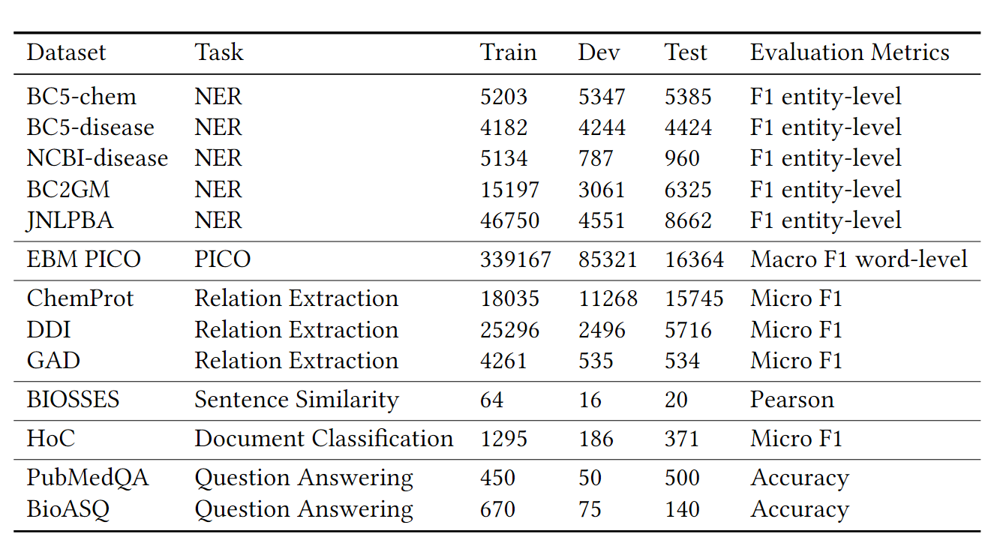

ACM 2021: 生物医学域的语言模型
摘要
《Domain-Specific Language Model Pretraining for Biomedical Natural Language Processing》为微软研究院发表的论文，收录于 2021 年 ACM 中。论文旨在探讨，特定领域的预训练也可以从通用领域语言模型开始受益，这一假设是否适用于具有大规模未标记数据的领域（例如生物医学）。论文证实，相较于从通用领域继续预训练，从头开始训练预训练模型能够获得更好的性能。此外，论文还提出了一个新的生物医学 NLP 基准 BLURB，并创建了排行榜。
介绍
NLP 中，在未标记文本上自监督地训练预训练模型，加之以目标域微调，已经被证实为是行之有效的迁移学习策略，尤其是在目标域数据稀缺、源域和目标域高度相关的情况下。尚不清楚特定领域的预训练是否可以从通用领域的迁移中受益。在生物医学领域，已有的工作表明使用域内文本可以提供超过通用域语言模型的额外收益。然而，这些工作都基于一个普遍的假设 -- 域外文本依然是有用的，并且通常采用混合域方法，例如，通过从现有的通用域语言模型开始特定域的预训练。
混合域方法
混合域方法如下图上半部分所示。基于在互联网、维基百科等预训练得到的通用语言模型，继续进行特定域的预训练。
然而，这种方法存在以下问题：
- 文本差异。生物医学领域的文本和通用域文本有较大差异，混合域方法增加了负迁移的可能性。
- 词表差距。目标域与通用域的词表差距较大。以 BERT 为例，BERT 的词表是从 Wikipedia 和 BookCorpus 生成的，这与生物医学域的词汇差距较大。例如 "naloxone" 一词（纳洛酮），医学里的常用名词，在 BERT 中被拆为四块：[na, ##lo, ##xon, ##e]
从头开始训练
上图的下半部分是从头开始进行特定域的预训练的例子（train from scratch）。from scratch 是从头开始的意思，引申一下就是不使用预训练模型，从头开始训练。
如果目标域本身的文本很少，则混合域预训练方法是有意义的，因为可以从使用相关领域的预训练中受益。但是，生物医学并非如此，它在 PubMed 中拥有超过 3000 万个摘要。因此，从头开始的特定领域预训练可能是更好的训练策略。它的优点有：
- 域内数据。使用的数据全部来自域内，不受其他领域文本的影响。
- 域内词表。不受通用域词表限制。
- 随机初始化。神经网络训练使用非凸优化，这意味着持续的预训练可能无法从通用域语言模型中完全撤消次优初始化。
论文实验表明，在生物医学领域，从头开始的特定领域预训练大大优于通用语言模型的继续预训练，从而证明支持混合领域预训练的普遍假设并不总是适用。
此外，论文在提出了一个生物医学语言理解和推理基准 BLURB（Biomedical Language Understanding & Reasoning Benchmark），并在 https://aka.ms/BLURB 创建了排行榜。基准中包含：命名实体识别（NER）、循证医学信息提取（PICO）、关系抽取、句子相似度、文档分类、问答等子任务。将子任务得分加权后得到总分数。
BLURB 涉及到的任务类型、数据规模和评估指标如下表所示。

方法
采用预训练 + 特定任务微调的范式： ### 模型设置
- 词表：Word Piece 子词模型
- 预训练任务包含下局预测（NSP）任务，以便与 BERT 比较
- 全词掩码 (WWM)，掩码率为 15%
- 数据集：PubMed5 摘要，包含 1400 万个摘要，32 亿个单词，21 GB。
特定任务微调
从同一个预训练 BERT 开始，按照下图的架构，依次执行
- 输入转换：转换为任务所需的输入。例如关系抽取任务中，需要用特殊符号替换实体词；QA 中需要加入特殊分隔符等。
- 模型计算：得到编码向量。
- 特征抽取：从向量中选择任务所需的特征。例如，分类任务取 [CLS] 符号的表征向量，NER 取每个 token 的表征向量。
- 预测：根据任务 + 特征进行预测。例如，NER 使用线性层 / LSTM/CRF 进行分类，句子相似度使用线性层执行回归等。
BLURB 中的六个任务可分别定义为 token / 句子级别的分类 / 回归任务，如下表所示。
实验
基线模型
实验涉及到的一些基线模型如下：
其中，SciBERT
是使用生物医学和计算机科学的数据，从头开始生成词汇和预训练。
然而，从生物医学应用的角度来看，SciBERT
仍然采用混合域预训练方法，因为计算机科学文本显然是域外的。Wiki +
Books 的词表，即 BERT 的词表，意味着模型都是从 BERT 继续预训练的。
可以看到，除了本文的 PubMedBERT，其他模型都是混合域训练的方法。
实验结果
BLURB 上的结果如下表所示，其中所有的 BERT 模型都经过了相同的微调过程。通过从头开始进行特定领域的预训练，PubMedBERT 在大多数生物医学 NLP 任务中明显优于其他 BERT 模型。与使用域外文本训练的 BERT 模型相比，收益最为显着。

消融实验
词表
针对两种词表 & 两种掩码方式，论文使用 PubMedBERT 进行了消融实验。换而言之，两边的预训练方法都是从头开始的，不过是词表和掩码方式有所差异。结果如下表。可以看出，全词掩码是明显优于普通掩码的。从 PubMed 构建的词表在大多数任务上都是优于原始 BERT 的词表的。
从词表将句子编码后的平均长度也可以看出来，如下表，可以看出 PubMed 构建的词表的句子平均长度更短，在 QA 上达到了上百的差异。这里也可以看出，原始的 BERT 的词表在 BioASQ 任务上的 tokenize 后的平均句子长度为 702.4>512，句子被截断了，怪不得在这个数据集上跟 PubMedBERT 差了十几个点。。。

预训练方法
下表展示了预训练预料、训练时间对性能的影响。前两列均使用从通用语料 + 生物医学语料混合域预训练的方法，不过词表不同。两列性能比较互有来回，猜测是由于只根据单一域构建词表，混合域预训练性能受限，与只训练一半时间的 PubMed 类似。
对抗预训练
结果如下表所示。对抗预训练还损害了性能。作者认为可能是由于域内语料类别单一，如果预训练语料库更加多样化且相对域外，则对抗性训练更有用。
微调方法
以 NER、关系抽取为例，在 BERT 之前，都是使用 LSTM 和 CRF 进行标注。由于 BERT 横扫榜单，这种显式建模方法的实用性遭到了质疑。BERT 模型的顶层已经捕获了整个文本范围内的许多非线性依赖关系。直接进行分类也可以取得很好的效果。在下表中（F1 分数）也可以看出，线性层对在 5 个数据集上都取得了最优。而且线性层是可并行的，LSTM 还要引入额外的串行开销。
关系抽取中的虚拟化方法和关系编码的影响。虚拟化（dummify）方法是指在关系抽取中，为了防止过拟合，往往使用特殊符号（例如 $DRUG 和 $GENE）替换实体词。关系编码是指用于关系分类的向量，例如 [CLS] 或者特殊实体开始标记。
论文对关系编码的三种方法：[CLS]、实体词向量的最大池化、实体首符号的向量，以及输入实体符号的方法：虚拟化、原始文本、在实体前后添加标记进行了比较实验。结果如下表所示。简单地使用原始文本确实会使神经方法面临过拟合风险。对原始文本使用 [CLS] 是最糟糕的选择，因为很难判定要抽取哪两个实体间的关系。虚拟化仍然是最可靠的方法，它适用于任何一种关系编码方法。有趣的是，使用实体标记会在两个数据集中产生稍好的结果，因为它似乎可以防止过度拟合，同时保留有用的实体信息。

总结
这篇论文研究了” 通用域预训练模型，对于拥有大量未标记文本的特定域的迁移学习，是否有效 “的问题。在生物医学领域的实验表明，从头开始训练（train from scratch）是更好的选择。论文中还做了非常详细的消融实验，逐个探究词表、训练数据等的影响。